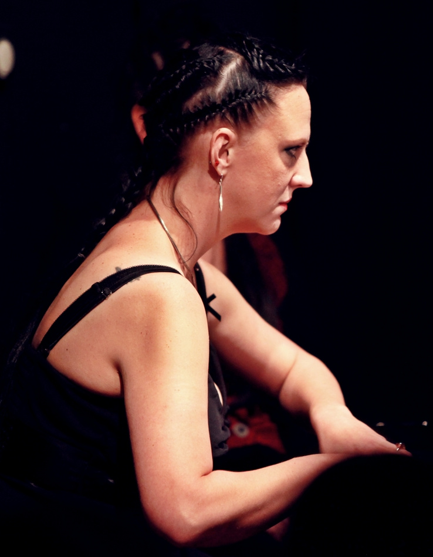

Cette page vous présente les artistes supportés par notre association, à savoir :

Carole Cantin
Après avoir obtenu son DESM de chant lyrique au Conservatoire National Supérieur de Musique et de Danse de Lyon, elle intègre les Musiciens du Louvre dirigés par M. Minkowski, avec lesquels elle a participé par exemple aux productions de Carmen et de La Belle Hélène.
Depuis 2011, elle est soprano supplémentaire de l’Opéra de Bordeaux et de l’Opéra de Rennes. Elle fait également partie du Chœur Parisien d’Opéra, ainsi que de plusieurs ensembles vocaux de solistes tournés vers la musique contemporaine.
Au cours de la saison 2013-14, elle est la Princesse dans l’Opéra du Chat de F. Albinarrate, et Teffi dans l’Opéra Les Sœurs d’Elena Sedeleva, création contemporaine donnée à la salle Messiaen de Grenoble.

Anne Varin
Ayant commencé la musique très tôt par le violon, elle a commencé des études de chant durant ses études de musicologie et a obtenu son DEM au Conservatoire à Rayonnement Régional de Grenoble en 2009.
Elle a rapidement pu se produire dans des opéras tels que The Fairy Queen ou Le pauvre Matelot ainsi que dans de nombreuses cantates et se spécialise petit à petit dans les musiques ancienne et contemporaine comme dans Messe un jour Ordinaire lors du Festival des 38èmes Rugissants.
Elle se produit également avec l'ensemble vocal grenoblois Temps Relatif avec lequel elle participe au Festival Berlioz ou encore au Festival d'Avignon, dans des œuvres de Burgan, Vic Nees, Zad Moultaka et d'autres compositeurs contemporains.
En parallèle de son métier d'enseignante et de chef de chœur, elle a intégré l’ensemble vocal de solistes ORFEO XXI, tourné vers la musique contemporaine, ainsi que le Choeur Britten dirigé par Nicole Corti, avec lequel elle se produit notamment à l'Auditorium de l'Orchestre National de Lyon en 2013 dans une œuvre de Gustav Holst.
En 2014, elle interprète le rôle de Mirra dans l’Opéra Les Sœurs d’Elena Sedeleva, création contemporaine donnée à la salle Olivier Messiaen de Grenoble, ainsi que le rôle de Belinda dans l'Opéra Didon et Enée de Purcell avec l'ensemble vocal Temps Relatif.
Enfin, depuis 2012, elle chante pour la Compagnie des Voix en Elles en formation de duos de Sopranes. Le premier programme proposé, Un printemps Romantique, a été donné plusieurs fois dans la région grenobloise ainsi que dans la région parisienne lors du Festival Printemps Musical du Pecq de 2014.

Charlotte Masse-Navette
Après avoir effectué ses études musicales à Grenoble, elle est entrée dans la classe de piano de Sébastien RISLER et a obtenu un prix de piano et de solfège aux Conservatoires Populaire et Supérieur de Genève.
Egalement titulaire d’une licence de musicologie, elle obtient en 2013 son DEM d’accompagnement au Conservatoire à Rayonnement Départemental de Valence dans la classe de Marie Duinat, ainsi que son DE de piano..A finir
Enseignante en piano et formation musicale à Grenoble, elle est également pianiste du chœur Hélios du CRD de Valence.

Stéphanie Thuery
Après ses études de piano au CRR de Grenoble dans les classes de Brigitte Melo puis de Christian Bernard, elle se spécialise dans l’accompagnement dans la classe de Sébastien JAUDON.
Stéphanie enseigne le piano et le solfège depuis 2001.
En 2009, sous la direction de Patrick Souillot, elle participe à West Side Story au Summum de Grenoble.
Récemment, elle a collaboré avec plusieurs artistes, notamment Anna-Maria Panzarella et Mylène Javey.
Depuis 2013, elle accompagne la chorale des Ménestrels de Voiron dirigée par Jean-Jacques Joye.
En mars 2014, elle est la pianiste dans la création d’un opéra russe contemporain, Les sœurs d’Elena Sedeleva, donné salle Messiaen à Grenoble, au côté d’Anne Varin et de Carole Cantin.